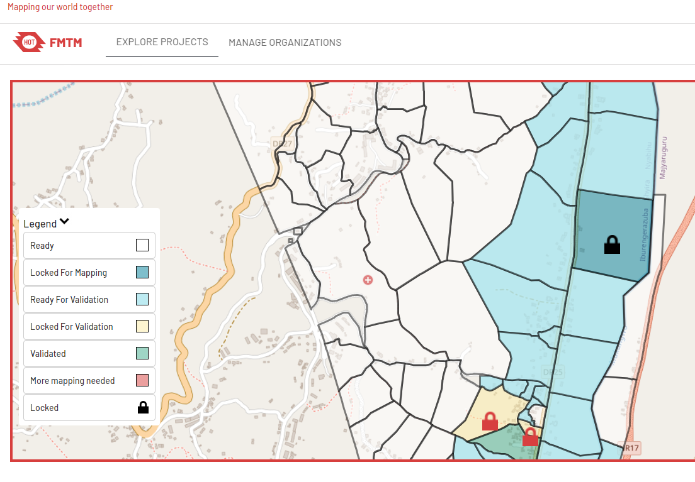
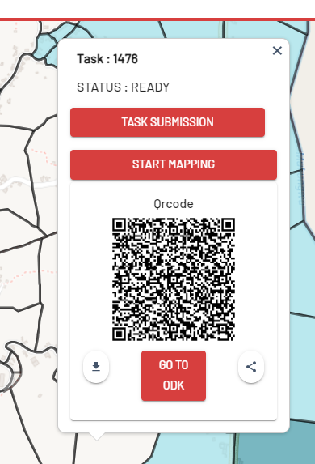
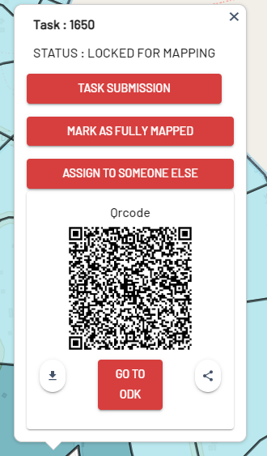

4.2. Using FMTM for Field Data Collection
Course Objectives
This section will covers on how the field surveyor uses Field Mapping Tasking Manager during their field mapping activities. By the end of this section, you should be able to:
- Learn how to navigate in FMTM site to download the QR Code
- Learn how to navigate within FMTM project
Learning Activities
Field Mapping Tasking Manager (FMTM) is a platform that helps project managers to organize and manage mapping tasks. It assigns those tasks to volunteers/surveyor and tracks their progress.
As a field user, you will heavily uses FMTM to select the grid, download the QR code, and mark grid as done (if you complete the task).
Working with FMTM Site
- Go to fmtm.hotosm.org, you will see list of projects created in FMTM. In order to start working on the project on FMTM, you need to create an account first,
- Click on Sign-up to create a new account with your email address. If you already have an account, click Sign-in

- Select the project by clicking on the project thumbnail
- You will be directed to the project overview page. Select the task/grid that Ready to map

- READY means that task is available to be mapped
- LOCKED FOR MAPPING means that task is already being mapped by another volunteer and therefore unavailable for mapping
- READY FOR VALIDATION means that task has been completely mapped and ready to be validated.
- LOCKED FOR VALIDATION means that task has been mapped and being validated.
- VALIDATED means that task has successfully been validated and completely mapped with no errors
- MORE MAPPING NEEDED means that task did not pass the validation process and needs more mapping
- After you select the task, press START MAPPING to lock the task and to ensure no one work on the same area as you.

- Scan the QR Code or download the QR Code by press the download button on the bottom left side.
- Use the QR code to start mapping the selected task using the ODK Collect app on your mobile phone (if you do not know on how to operate ODK Collect to load the QR Code, please check this tutorial)
Marking the Task as Completed
After you have completed the field survey, you need to mark the task as completed. To do this you need to:
- Go to your project area and select the grid that you locked previously
- Press MARK AS FULLY MAPPED if you already finished the task

- Your grid will turned into blue color to inform that your task is now complete and ready to validate
[Quiz] Check Your Knowledge
Please complete this following information regarding the status of FMTM
| 1 | …… means that task did not pass the validation process and needs more mapping |
| 2 | …… means that task is already being mapped by another volunteer and therefore unavailable for mapping |
| 3 | …… means that task has successfully been validated and completely mapped with no errors |
| 4 | …… means that task is available to be mapped |
| 5 | …… means that task has been mapped and being validated. |
| 6 | …… means that task has been completely mapped and ready to be validated. |
| Options | |||||
|---|---|---|---|---|---|
| READY FOR VALIDATION | LOCKED FOR VALIDATION | READY | LOCKED FOR MAPPING | MORE MAPPING NEEDED | VALIDATED |
Answer
- MORE MAPPING NEEDED
- LOCKED FOR MAPPING
- VALIDATED
- READY
- LOCKED FOR VALIDATION
- READY FOR VALIDATION
Activity Checklist
By the end of this section, you should be able to:
- Navigate FMTM site to select the grid and download the QR Code
- Navigate within FMTM project